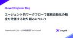
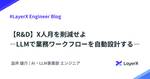

LayerX エンジニアブログ
https://tech.layerx.co.jp/
LayerX の エンジニアブログです。
フィード

エンジニア向けオフラインイベントの楽しみ方 3
3
LayerX エンジニアブログ
こんにちは。バクラクビジネスカード開発チーム エンジニアの iwamatsu です。 皆さんは勉強会や Meetup などのオフラインイベントに参加したことはありますか？ ご存知の通り昨今は AI の話題で持ち切りですが、それに伴って今各所で AI 活用事例を共有し合うイベントが盛んに開催されており、所属を超えたオフラインでの交流が今まで以上に活発になってきているなと感じています。 でもオフラインイベントに参加するのって最初ちょっとハードル高くないですかね？どうやって参加したら良いんだろうとか、懇親会で孤立したらどうしようとか。 自分も以前はそういったイベントに参加したことがなかったんですが、…
1日前

エージェント的ワークフローで業務自動化の精度を改善する取り組みについて 1
LayerX エンジニアブログ
はじめまして、LayerX AI・LLM事業部でテックリードをやっているisamisushiと申します。 今回は我々が取り組んでいる「エージェント的ワークフロー (Agentic Workflows)」についてご紹介します。 AI・LLM事業部では、Ai Workforceというプロダクトを開発しています。Ai WorkforceはLLM（大規模言語モデル）を活用したワークフローエンジンであり、LLMを用いて各種ビジネスドキュメントワークを効率化、自動化することを目的としています。 契約書、提案書、発注書、決算書など、多様なビジネスドキュメントを読み込み、変換・整形・情報抽出・整理などの処理を…
2日前

Cursor Agent がQAエンジニアのプロダクト理解を加速させてくれた話 56
LayerX エンジニアブログ
はじめに こんにちは、LayerX バクラク事業部で請求書発行を担当している QAエンジニアの genny です！ 最近、API の自動テストを実装する中で、プロダクトコードの処理フローを追う必要に迫られました。Cursor を活用することでスムーズに理解を深めることができたので、その過程で得た知見を共有できればと思います。 なぜプロダクションコードを読む必要があったのか 以前のチームでは Ruby on Rails のシステムに携わっており、その時はある程度コードを読めるようになっていましたが、バクラクのバックエンドで採用されている GraphQL や Go で実装されたシステムに携わった経…
6日前
Langfuse 用の ClickHouse 冗長構成を AWS Fargate で実現する 7
LayerX エンジニアブログ
バクラク事業部 Platform Engineering 部 SRE グループの uehara です。 この記事では LLMOps プラットフォーム Langfuse のストレージとして利用する ClickHouse について、AWS Fargate で実現したクラスタ構成を紹介します。 背景 LayerX では行動指針を 「Bet Technology」から「Bet AI」へ変更 するなど、数あるテクノロジーの中でも AI や LLM に注力しています。 LLM を用いた機能開発や検証を進めるうえで LLMOps プラットフォームとして Langfuse を利用することとなりました。LLMO…
12日前

【R&D】 X人月を削減せよ ーLLMで業務ワークフローを自動生成するー 54
LayerX エンジニアブログ
大規模言語モデル（LLM）を活用したワークフローエンジン「Ai Workforce」をさらに効率的に活用するため、ドキュメント処理のワークフローを自動的に設計・生成するR&Dプロジェクト「ワークフロー自動生成」を紹介します。実業務では多種多様なドキュメントを扱います。各種ドキュメントをカバーするワークフローは複雑になる傾向があり、その開発コストも数人月になります。本プロジェクトでは、LLMのReasoningとLLM-as-a-Judgeにより、複雑なワークフローを自動生成することを目指します。
14日前

テストピラミッド定義がもたらした LayerX バクラク開発チームの変化と効能
LayerX エンジニアブログ
こんにちは。株式会社LayerX バクラク事業部 QAチームのteyamaguです。 私たちはバクラク事業部で、複雑なtoB向けSaaS開発において、品質保証と開発速度の両立を常に追求しています。以前からテストの重要性は認識しつつも、プロダクトや組織の拡大に対し、体系だったテストピラミッドの概念は明確には定義されていませんでした。その結果、現場でのテスト実装時に迷いが生じたり、ツール整備が組織横断で進めにくいという課題がありました。 この状況を改善すべく、私たちはバクラク事業部独自のテストピラミッドを、私のようなQAエンジニアと開発エンジニアが協力して定義しました。具体的な定義の内容については…
15日前
モバイルチームの AI ドリブンテックイベントの紹介 ── No-Coding, AI Code Hack Day
LayerX エンジニアブログ
こんにちは！LayerXでモバイルエンジニアをやっているたまねぎです！ 最近は朝9:30頃にランチを食べる習慣がついてしまい、この記事を書いた日はとんかつ弁当を9:30に食べ終えました！おいしかったです！！！ 先日、チームメンバーのyoheiさんが書いたブログで「AI First」な働き方を発信しました。 AIと共に進化するエンジニアへ：モバイルアプリチームが目指す「AI First」と「越狂」な働き方 - LayerX エンジニアブログ 今回の記事では、それも踏まえてチームで定期的に開催しているテックイベントについて、ご紹介いたします。 オープニング 早速ですがAI Firstを実践して、こ…
19日前
Devin に怒られたので、macOS の BSD grep で \d が使える謎を追うことにした
LayerX エンジニアブログ
バクラク事業部 PlatformEngineering 部 SRE グループマネージャー 兼 執行役員 CISO の @kani_b です。 タイトルからは想像しにくい書き出しですが、みなさん Devin はもうお使いでしょうか？LayerX でもエンジニア組織全体で積極的な利用が進んでいます。今回は導入当時に起きたおもしろ話を共有します。 2ヶ月くらい前、バクラク事業部で Devin を使いはじめることとなり、事業部 CTO の @yyoshiki41 が勢いよくレポジトリのセットアップを進めて、ついに Devin からの初 Pull Request が出てきました。 わ、ワイか…と思いつつ…
20日前
Clineとモブプロしてみたら「使われないものを作らない」が加速した #日めくりLayerX
LayerX エンジニアブログ
こんにちは！バクラク申請・経費精算Webのエンジニアリングマネージャーをやっています、@ar_tamaです。 このブログは、【#日めくりLayerX】と題して発信するブログリレーの2025年4月23日の記事です！ 昨日はzamamiさんのAI前提のプロフェッショナルの働き方について #日めくりLayerX｜Takumi Zamamiをお届けしました。ぜひ併せてご覧くださいね！ つい最近、LayerXでは会社のOSたる行動指針に「Bet AI」を追加しました。 プロダクトへの組み込みはもちろんのこと、私たちの開発現場でもAI codingを実践しています。 （LayerXではこんなイベントも主催…
21日前
生成AIプラットフォーム導入のための「テクニカルプロジェクト・マネジメント」
LayerX エンジニアブログ
こんにちは。LayerX AI・LLM事業部でSREを担当している@shinyorke（しんよーく）と申します。 「企業と共に成長するAIプラットフォーム」であるAi WorkforceのSREとして、 Ai Workforceのサイト信頼性エンジニアリング（Site Reliability Engineering） SREチーム立ち上げ（SREメンバー大絶賛募集中です！&詳しくはこちら） Ai Workforceをお客様に導入する際のテクニカルプロジェクト・マネージャーとしてデリバリーの最前線で勤務 以上のミッションを日々行っています。 サイト信頼性エンジニアリングとチームの立ち上げについて…
22日前
Datadogのメトリクス収集をAPIポーリングからCloudWatch Metric Streamsへ移行した話
LayerX エンジニアブログ
こんにちは！バクラク事業部 Platform Engineering部 SREグループの id:sadayoshi_tadaです。 みなさんは監視ツールとして何を使われていますか？バクラクでは、監視にDatadogを使用しています。この記事ではDatadogのメトリクス収集の課題とそれに対する改善について書きます。 Datadogに収集するメトリクスにおける課題 CloudWatch Metric Streamsとは CloudWatch Metric Streamsで収集するメトリクスのフィルタリング Kinesis Data Firehoseを経由したDatadogへのメトリクス転送実装 …
23日前
Storybook Play functionでAHA testingのすゝめ
LayerX エンジニアブログ
バクラク事業部でソフトウェアエンジニアをしている @ta1m1kam です。 フロントエンド開発において「どのテストをどれだけ書くべきか？」という問いは、誰もが一度は悩むテーマです。ユニットテスト？E2Eテスト？ビジュアルリグレッション？それぞれに役割があり、バランスが求められます。 Testing Trophy そんな悩みに対する一つの指針として、Kent C. Dodds氏が提唱した 「Testing Trophy（テスティング・トロフィー）」 という考え方あります。（提唱自体は2021年ごろなので、今では割と一般的になっているかなと感じています。） kentcdodds.com ポイント…
24日前
統合GraphQL Gatewayとtsoaで作る、バクラク新REST API基盤
LayerX エンジニアブログ
バクラク事業部のAPIチームでソフトウェアエンジニアをしている @anashi です。 私たちのチームは、バクラクと外部システムとの連携を可能にするためのREST APIを開発・提供しています。 このAPIを使えば、例えば会計システムやERP、ZapierのようなiPaaS、各種ファイルストレージなど、お客様が利用されている様々なシステムとバクラクを連携させ、より組織に最適化された業務フローをデザインすることが可能になります（具体的な連携イメージに興味がある方は、ぜひ以下の記事もご覧ください！）。 note.com さて、バクラクでREST APIを提供するのは今回が初めてではありません。以前…
1ヶ月前
v0でも出来る外部API呼び出し
LayerX エンジニアブログ
はじめに こんにちは、LayerX AI・LLM事業部のソフトウェアエンジニアのyudetamagoです。 AI・LLM事業部では現在「Ai Workforce」というプロダクトを開発しているのですが、フロントエンドの開発効率化のためにv0を活用しています。 v0は画面のモックアップの作成のために使うことが多いと思いますが、プロンプト次第では外部APIの呼び出しも行うことが出来ます。そこで、外部APIを呼び出す時に リクエストに何を含めるか レスポンスを画面上のどこに表示するか をプロンプトで楽に指定出来たらv0上でモックアップだけではなくある程度バックエンドも含むプロトタイプが作れるのではな…
1ヶ月前
TSKaigi 2025にブロンズスポンサーとして協賛します＆2名登壇します #TSKaigi
LayerX エンジニアブログ
バクラク申請経費精算でエンジニアをしています三角 (@delta) です。 株式会社LayerXは、日本最大級のTypeScriptをテーマとした技術カンファレンスであるTSKaigi 2025に、ブロンズスポンサーとして協賛します。 また、LayerXのソフトウェアエンドエンジニア 田中 (@ypresto)と泉 (@izumin)の2名のプロポーザルが採択され、登壇を予定しています。 登壇内容のご紹介 ts-morph実践：型を利用するcodemodのテクニック @ypresto ts-morphを使うと大量のコードを一度に安全に修正することができることは皆さんご存知かと思います。既存のイ…
1ヶ月前
AIと共に進化するエンジニアへ：モバイルアプリチームが目指す「AI First」と「越狂」な働き方
LayerX エンジニアブログ
こんにちは！LayerXでモバイルアプリチームのEM（エンジニアリングマネージャー）をしているyoheiです。 最近、子どもが唐揚げを食べてる写真のTシャツを買ってテンション上がってます。 LayerXでは、全社的にAI活用を推進する「Bet AI」という行動指針があり、私たちモバイルアプリチームも、AIを前提とした開発スタイル「with AI」を模索しています。 参考：LayerX、全社的なAI活用を推進する「BetAI」を開始 参考：LLMと共に歩む アプリチームwith AI開発戦略 今日は、AIの進化がエンジニアの働き方や求められるスキルをどう変えていくのか、そして私たちアプリチームが…
1ヶ月前
スプリントレトロスペクティブを改善した話
LayerX エンジニアブログ
こんにちは、バクラク債権管理 & 債務管理 エンジニアの @noritama です！ アジャイル開発におけるスプリントレトロスペクティブは、チーム運営を改善し成果を最大化していくための重要なプラクティスです。 しかし、運用方法によって形骸化してしまったり、期待した効果が得られなかったりすることもあります。 私たちのチームでは、以前はKPTフレームワークを用いたシンプルな振り返りを実施していましたが、いくつかの課題を抱えていました。 今回は、振り返り会のアジェンダを見直すことで振り返りの改善をした話をします。 以前の振り返りが抱えていた課題 従来のKPTによる振り返りでは、主に以下の3つの課題が…
1ヶ月前
AI Coding Meetup #1 を開催しました #aicoding
LayerX エンジニアブログ
こんにちは！すべての経済活動を、デジタル化したい @serima です。 4月8日(月)に、記念すべき第1回目となる「AI Coding Meetup」をオフライン/オンラインのハイブリッド形式で開催しました！ AIコーディングツールを組織やチームで活用しているエンジニアの皆さんと濃密な時間を過ごすことができ、企画者としても大変嬉しいイベントとなりました。 今回は、本イベントの企画の意図やウラ側にフォーカスを当てながら、イベントレポートも兼ねて書き留めておきたいと思います。 layerx.connpass.com 🏄♂️ イベント開催にいたるまで 2025年初頭、GitHub Copilot…
1ヶ月前
仕様理解を促進するDevinの活用—ドキュメント生成の効率化とCursor連携
LayerX エンジニアブログ
はじめに こんにちは！LayerX AI・LLM事業部LLMグループのマネージャーを務めていますエンジニアの恩田（ さいぺ ）です。 AI・LLM事業部では「Ai Workforce」というプロダクトを開発しています。レポジトリができてから早1年半、多数の機能が実装されてきました。ところが昔から存在する一部の機能については、開発者が不在、仕様や実装を完全に把握しているメンバーが特定のエンジニアに限られているといった課題が発生しています。 また、開発スピードを優先し、コメントが残されていないコードや、設計ドキュメントがないといった課題もありました。 こうした課題に対して、Devinを活用して .…
1ヶ月前
春のLT祭り！を開催しました
LayerX エンジニアブログ
バクラク事業部Platform Engineering部SREグループの id:itkq です。先日「春のLT祭り！」と題してエンジニアLT会を実施しました。その様子をレポートします。 エンジニアLT会とは LayerXではおよそ3ヶ月に1回のペースで、有志によるエンジニアLT会を開催しています。技術の幅を広げること・事業部を超えた交流を目的としています。 基本的に「技術の話」以上のテーマの縛りはなく、今回もフリースタイルでした。オフラインの会場を用意しつつ、オンライン同時配信も行っています。 また、いくらかの予算を確保しており、軽食とドリンクを用意しつつゆるりとした雰囲気で進行しています。 …
1ヶ月前
GOCACHEPROG を http.Handler ライクに実装できるパッケージをつくってみた！
LayerX エンジニアブログ
こんにちはバクラク事業部 PlatformEngineering 部の hira です！ 今回は GOCACHEPROG を http.Handler ライクに実装できるパッケージを作ったので紹介します。 GOCACHEPROG の登場で Go のキャッシュロジックを自分たちで実装できるようになりました。 私自身も CI の実行時間を短縮するという目的で実装してみたのですが、 Go 公式からは API 等が公開されておらず実装で手間取ってしまう場面がありました。 もう少し手軽に GOCACHEPROG 実装したいという思いから今回パッケージを作成してみました。 ソースコードは GitHub 上…
1ヶ月前
AI Editorをフル活用したFlutterアプリの多言語対応 - 工数削減と品質向上へ #BetAI
LayerX エンジニアブログ
おはようございます。バクラク申請・経費精算 アプリエンジニアのyoheiです。 アプリを開発してるエンジニアとしてZ世代のアプリを触らねばということで、BeRealを始めました。日常をひっそりとアップしています。 昨年リリースした バクラク申請・経費精算 アプリですが、使いやすいとのお声を多くいただくことが増えており、非常に嬉しいです。 さらなるアプリの利用者を増やすため英語対応を進めています。既にある日本語をすべて英語対応するとなると、膨大な時間と手間がかかるタスクです。 そこで当社では、Flutterアプリの日英対応において、AI Editor「Cursor」を駆使した効率的なワークフロー…
1ヶ月前
AI・LLM事業部プロダクト開発体制について
LayerX エンジニアブログ
LayerXのAI・LLM事業部で事業部CPO 兼 プロダクト部の部長をしている小林(@nekokak)です。 2025年4月1日から事業部内の体制が変わり、プロダクト開発を推進するチームもupdateがあったのですが、内外からどういう体制なんですか？って聞かれることが多いので簡単ではありますが、我々がどういう体制で開発を行っているかを紹介してみたいと思います。 AI・LLM事業部 全体の体制について AI・LLM事業部は4月1日から２つの部が誕生しました。 BizDevとコンサルティングを中心とするビジネス部、プロダクト開発・運用を行うプロダクト部の２つです。 私はプロダクト部のマネージメン…
1ヶ月前
組織図に対するさまざまな要求と現在地
LayerX エンジニアブログ
こんにちはまたはこんばんは、バクラク事業部 Platform Engineering 部でID基盤などを管理するチームに所属してあれこれやっている id:convto といいます。 認可などに関連することからバクラクでも「組織図」と表現されるリソースを弊チームで管理しているのですが、今回はその組織図についてお話しします。 この記事で取り扱う組織図リソースについて この記事で「組織図」と表現されるものは、組織の階層をあらわす木構造と、それぞれのチームの従業員所属情報などを管理するリソース全体を指します。 よくある例を簡易的な図で示します。 組織図の例 各社に合わせた情報統制を実現しようとしたとき…
1ヶ月前
Go読書会を通じて学び合うエンジニア文化
LayerX エンジニアブログ
バクラク事業部 バクラクビジネスカード開発チームのエンジニア @budougumi0617 です。 LayerXのエンジニアカルチャーの一例として、Go読書会の活動とそこから得られる学びについて紹介したいと思います。 Go読書会について LayerXでは（ほぼ）毎週1時間Go読書会を行なっています。以前にも以下のブログや登壇で活動を紹介しています。 tech.layerx.co.jp speakerdeck.com 読書会の形式 当日は数ページごとに交代で音読することを基本スタイルとしています。 音読は進みが少し遅くなりますが、例えばサンプルコードを読む時、各人がどんな流れでコードリーディング…
1ヶ月前
ドメイン知識をプロダクト開発に最大限活かす - 経理バックオフィスSaaS開発の現場から
LayerX エンジニアブログ
はじめに こんにちは。LayerXでソフトウェアエンジニアをしていますysakura_です。バクラク債権・債務管理を担当しています。これまで、バクラクビジネスカード, バクラク請求書発行, バクラク債権・債務管理を担当し、下記のような機能を開発してきました。 バクラクビジネスカード、法人カード利用“後”の「証憑の回収」「稟議との紐付け」「仕訳」をバクラクにする機能を公開 - バクラク バクラク請求書発行、「売上仕訳」機能をリリース。仕訳の作成・編集ができるように。 - バクラク 日々の開発の中で、私は「ドメイン知識(特定の業務や業界に関する専門知識)にエンジニアが踏み込んでいくこと」の重要性を…
2ヶ月前
EM観点から見た生成AIプロダクト開発におけるQAエンジニアの役割とおもしろさ
LayerX エンジニアブログ
こんにちは、LayerX AI・LLM事業部の篠塚(@shinofumijp)です。エンジニアリングマネージャーとして生成AIプラットフォーム「Ai Workforce」の開発に携わっております。 Ai Workforceはすでにお客様にもご導入いただき、実際の業務にてご利用いただいています。 getaiworkforce.com 現在Ai Workforceの開発はスケール期を迎え、プロダクト開発のスピードと安定性を両立させ、プロダクトの品質を向上させることが重要なフェーズになってきました。そのため、このミッションを牽引するQAエンジニアの募集を始めました。 open.talentio.co…
2ヶ月前
解剖！Terraform monorepo
LayerX エンジニアブログ
バクラク事業部 Platform Engineering部 SREの id:itkq です。バクラク事業部では2022年にアプリケーションのmonorepo化を始め、現在では対応するインフラもmonorepoで運用しています。今回は、そのうちTerraformについて紹介します。 monorepoに至るまで 2022年、アプリケーションをmonorepo化していくプロジェクトが始まりました (通称layerone。リポジトリ名もlayerone)。これについての詳細は次のスライドを参照してください。 これに合わせて、対応するインフラを記述するTerraformも同じlayeroneリポジトリに…
2ヶ月前
バクラク開発におけるテストプランの進化 アジャイル、インプロセスQAでの試行錯誤
LayerX エンジニアブログ
LayerX QAマネージャーの 中野@naoです。 アジャイル開発のスピード感とあるべき品質保証の両立、悩みますよね。私たちLayerXのQAチームも、日々試行錯誤を重ねています。今回は、その中でも『テストプラン』に焦点を当て、私たちがどのように考え、実践しているのかをご紹介します。 概要 私が所属するバクラク事業部では2週間サイクルでリリースを行なっており、リリース前の3営業日がテスト期間です。QAエンジニアはインプロセスQAとして、各プロダクト開発チームに入ってテストや品質に関わる活動をしています。 従来のテストプランは、テスト戦略、環境、データ、スケジュール、リソース、タスク、リスク管…
2ヶ月前
生成AI時代のCloud NativeとSREに対する考え方とスタンス
LayerX エンジニアブログ
こんにちは。LayerX AI・LLM事業部 SREのshinyorke（しんよーく）と申します。 現在はAI・LLM事業部のAIプラットフォーム「Ai Workforce」1人目のSREとして、 SRE（Site Reliability Engineering）の戦略策定と導入、実装。 企業への導入に際する技術的なサポート・伴走。 SREチーム立ち上げの為の組織作り。より具体的にはSREの採用と育成。 以上のミッションを担っています、入社から現在までの営みはこちらのブログで紹介しています。 tech.layerx.co.jp 一人目SREとして情報とノウハウを泥臭く取りに行きながら、さっさと…
2ヶ月前